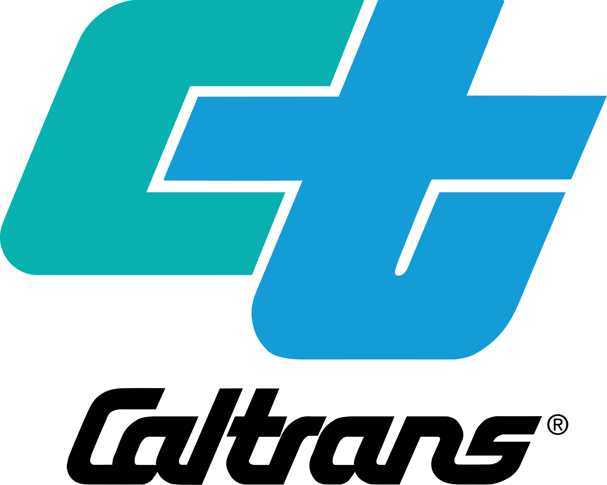
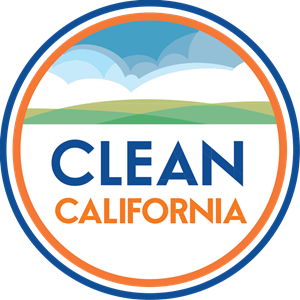

In partnership with



Led by TAM AIR and supported by school leadership, we're pursuing the official Clean California Community designation for Tamalpais High School — a free statewide program by Caltrans that recognizes communities committed to staying clean and beautiful.


Clean California is a statewide initiative by Caltrans that rewards communities for their commitment to cleanliness and beautification. Once designated, communities receive personalized signage, recognition on state websites and social media, and access to national grant opportunities through Keep America Beautiful.
The designation is completely free. Communities must meet at least 10 of 15 criteria within one year of signing the pledge. Based on TAM AIR's existing environmental programs and school infrastructure, Tamalpais High School is well-positioned to achieve this designation by the end of the 2025–2026 school year.
Personalized "You Are Entering a Clean California Community" sign posted at the school
Featured on state websites, social media, and state-partnered media outreach
National grant opportunities, educational materials, and volunteer cleanup kits from Keep America Beautiful
Must meet at least 10 of 15 criteria. Green = met, orange = in progress, gray = not planned.
Principal Mr. Pasarow to e-sign the official Clean CA pledge on behalf of Tamalpais High School.
TAM AIR Club serves as the Clean CA advisory committee, with faculty support from Mr. Brow (AP Environmental Science).
Student and staff survey on campus cleanliness and beautification priorities.
Campus litter baseline assessment using drone imagery, with potential involvement from AP Environmental Science class.
TAM AIR conducts regular beach cleanups and campus cleanup events. 4+ per year documented.
Tracking volunteer count, cleanup events, and pounds of litter removed per event.
TAM AIR delivers STEM education and environmental awareness programs across Mill Valley schools.
School visits to Mill Valley Middle, Park Elementary, and Strawberry Elementary with anti-litter and environmental curricula.
Tam High campus has trash and recycling bins at key locations, emptied regularly by facilities staff.
Anti-litter signage campaign on campus and student-led accountability program.
Sustainability strategy to maintain cleanliness year-over-year, including passing the initiative to future TAM AIR leadership.
Campus beautification project: planting a garden or flower beds in coordination with school administration.
E-waste and hard-to-recycle item collection day hosted on campus for students and families.
Established partnerships with Caltrans, Clean California, and Keep California Beautiful. Engaging local Mill Valley businesses.
Install receptacles at campus perimeter areas in coordination with school facilities.
Our plan to achieve Clean California Community status by June 2026
TAM AIR Club serves as the designated advisory body, with faculty support and state-level partnerships already in place.
TAM AIR's existing education programs satisfy both the community education and youth education criteria.
Regular cleanup events and existing campus infrastructure meet two more criteria.
Formalize the initiative with school leadership and gather student and staff input.
Establish data baselines using TAM AIR's drone capabilities and the AP Environmental Science class.
Complete the final in-progress criteria to reach 11 of 15.
Package all evidence and submit the designation application to Caltrans.
Celebrate Tam High's achievement with the school community.
Have the official Clean California Community sign posted at Tamalpais High School and celebrate the designation with the entire school community before the end of the year.
Whether you're a student, teacher, parent, or local business — we need your support to make Tam High a Clean California Community.